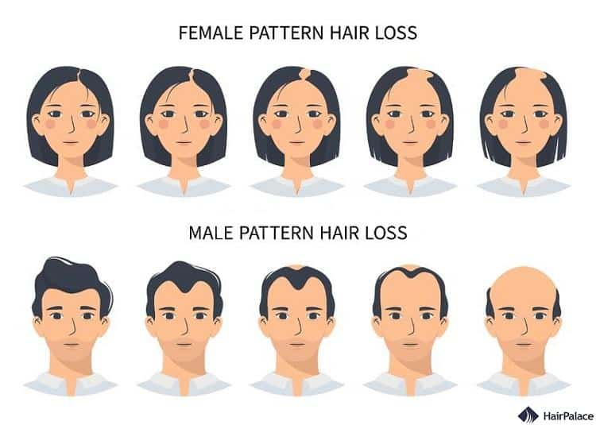
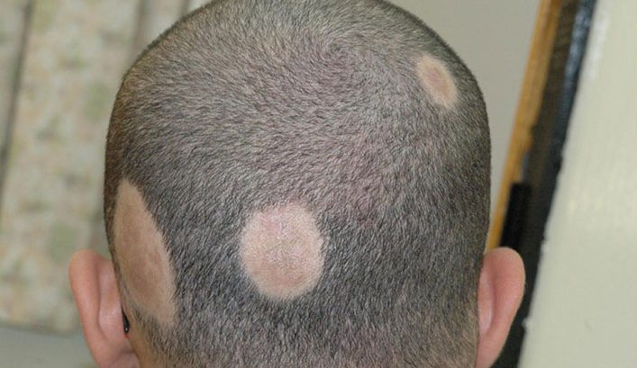

कपाल झर्ने समस्या: कारण र उपचार
Hair Loss: Causes, Treatments and Management

कपाल झर्ने समस्या विश्वभरि लाखौं मानिसहरूलाई प्रभावित गर्ने सामान्य समस्या हो। यो समस्या पुरुष र महिला दुवैमा हुन सक्छ र यसले व्यक्तिको आत्मविश्वासमा ठूलो असर गर्न सक्छ। यस लेखमा, हामी कपाल झर्ने समस्याका कारणहरू, रोकथामका उपायहरू र हालैका उन्नत उपचारहरूको बारेमा विस्तृत जानकारी प्रस्तुत गर्नेछौं।
कपाल झर्ने समस्याका प्रमुख कारणहरू
Major Causes of Hair Loss

आनुवंशिक (एन्ड्रोजेनेटिक एलोपेसिया)

एलोपेसिया एरेटा (ऑटोइम्यून)
टेलोजेन एफ्लुभियम (तनाव)
पोषणको कमी
१. आनुवंशिक कारण
1. Genetic Causes
पुरुष र महिला दुवैमा आनुवंशिक कपाल झर्ने समस्या (एन्ड्रोजेनेटिक एलोपेसिया) सबैभन्दा सामान्य कारण हो। यो समस्या परिवारमा हुने गर्दछ र उमेर बढ्नेसँगै बढ्दै जान्छ।
२. हर्मोनल परिवर्तन
2. Hormonal Changes
गर्भावस्था, प्रसव, थाइरोइड समस्याहरू, र मेनोपजले हर्मोनल असंतुलन निम्त्याउँछ, जसले गर्दा कपाल झर्ने समस्या हुन सक्छ।
३. चिकित्सा अवस्थाहरू
3. Medical Conditions
ऑटोइम्यून रोगहरू (एलोपेसिया एरेटा), छालाको रोगहरू, र संक्रमणहरूले कपाल झर्ने समस्या निम्त्याउन सक्छन्।
४. औषधिको प्रभाव
4. Medication Effects
क्यान्सर उपचार (कीमोथेरापी), रक्तचापको औषधि, गठिया रोगको औषधि, र जन्म नियन्त्रणका गोलीहरूले कपाल झर्ने समस्या निम्त्याउन सक्छन्।
५. तनाव र खानपान
5. Stress and Diet
शारीरिक वा भावनात्मक तनाव, प्रोटीन र आयरनको कमी, र विटामिन बी१२ जस्ता पोषक तत्वहरूको अभावले कपाल झर्ने समस्या हुन सक्छ।
महत्त्वपूर्ण सुझाव
Important Tip
कपाल झर्ने समस्याको उपचारमा स्थिरता र धैर्य महत्त्वपूर्ण छ। उपचारको प्रभाव देख्न केही महिना लाग्न सक्छ, त्यसैले उपचार हतार नगर्नुहोस् ।
कपाल झर्ने बारे शैक्षिक भिडियो
Educational Video on Hair Loss
यो भिडियोमा कपाल झर्ने समस्याका विभिन्न कारणहरू र उपचारका विकल्पहरूको बारेमा विस्तृत जानकारी समावेश छ।
कपाल झर्ने समस्याको लागि उपचारका विकल्पहरू
Treatment Options for Hair Loss
🩸 PRP (प्लेटलेट-रिच प्लाज्मा)
🩸 PRP (Platelet-Rich Plasma)
रोगीको रगतबाट प्लेटलेट युक्त प्लाज्मा निकाली कपालको फोलिकलमा इन्जेक्ट गरिन्छ। यसले ग्रोथ फ्याक्टरहरू प्रदान गरी कपालको जरा बलियो बनाउँछ र नयाँ कपालको वृद्धिलाई उत्तेजित गर्छ।
🧬 GFC (ग्रोथ फ्याक्टर कन्सन्ट्रेट)
🧬 GFC (Growth Factor Concentrate)
GFC PRP भन्दा अझ परिष्कृत विधि हो, जसमा विशेष प्रक्रियाबाट शुद्ध ग्रोथ फ्याक्टरहरू (FGF, VEGF, EGF) निकालिन्छ। यसले कपालको फोलिकललाई पुनर्जीवित गर्न मद्दत गर्छ र उपचारको प्रभाव छिटो देखिन्छ।
१. औषधीय उपचारहरू
1. Medical Treatments
- मिनोक्सिडिल: यो तरल वा फोमको रूपमा उपलब्ध छ र कपालको वृद्धिलाई प्रोत्साहित गर्दछ
- फिनास्टराइड: यो गोलीको रूपमा लिइन्छ र पुरुषहरूमा कपाल झर्ने समस्याको लागि प्रभावकारी छ
- एन्टीएन्ड्रोजेन थेरापी: महिलाहरूमा हर्मोनल कपाल झर्ने समस्याको लागि प्रयोग गरिन्छ
२. हेयर ट्रान्सप्लान्ट
2. Hair Transplant
हेयर ट्रान्सप्लान्ट एक सर्जिकल प्रक्रिया हो जसमा कपालको घना भागबाट कपालको फोलिकलहरू लिई कपाल पातलो भएको वा गएको भागमा रोपिन्छ। यो प्रक्रिया स्थायी समाधान हो र आधुनिक तरिकाहरू जस्तै FUE (Follicular Unit Extraction) र FUT (Follicular Unit Transplantation) प्रयोग गरिन्छ।
३. स्टेम सेल थेरापी
3. Stem Cell Therapy
स्टेम सेल थेरापी कपाल झर्ने समस्याको लागि एक नयाँ र आशाजनक उपचार हो। यस प्रक्रियामा रोगीको शरीरबाट लिइएका स्टेम सेलहरू कपालको फोलिकलहरूमा इन्जेक्ट गरिन्छन्, जसले गर्दा नयाँ कपालको वृद्धि हुन्छ। यो प्रक्रिया कम इन्भेसिभ र छिटो रिकभरी समयको साथ आउँछ।
🧪 कम-डोज मिनोक्सिडिल (Low-Dose Oral Minoxidil)
🧪 Low-Dose Oral Minoxidil
हालैका अध्ययनहरूले कम मात्रामा (०.६२५mg - २.५mg) मौखिक मिनोक्सिडिल कपाल झर्ने उपचारमा प्रभावकारी देखाएको छ। यसले टपिकल मिनोक्सिडिलको तुलनामा सुविधाजनक र कम साइड इफेक्टको साथ काम गर्छ। विशेषगरी महिलाहरू र टपिकल औषधिबाट जलन भएकाहरूका लागि उपयुक्त हुन्छ। तर यो चिकित्सकको परामर्शमा मात्र प्रयोग गर्नुपर्छ।
हालै प्रकाशित अनुसन्धान लेखहरू
Recently Published Research Articles
हेयर लस रोगहरूको उपचारमा नयाँ औषधिहरूको समीक्षा
Review of New Medications in the Treatment of Hair Loss Disorders
यस समीक्षा लेखमा हालै विकसित जाक इन्हिबिटरहरू, प्रोस्टाग्ल्यान्डिन एनालगहरू, र अन्य नयाँ उपचारहरूको प्रभावकारिता बारे विस्तृत विश्लेषण छ।
एन्ड्रोजेनेटिक एलोपेसियाको लागि स्टेम सेल थेरापीको नैदानिक परीक्षण
Clinical Trial of Stem Cell Therapy for Androgenetic Alopecia
यस अध्ययनले स्टेम सेल थेरापीले कपालको घनत्वमा ४०% वृद्धि गरेको देखाएको छ र यो उपचार सुरक्षित र प्रभावकारी रहेको छ।
महिलाहरूमा कपाल झर्ने: रिस्क फ्याक्टर र उपचारका रणनीतिहरू
Hair Loss in Women: Risk Factors and Treatment Strategies
यस लेखमा महिलाहरूमा कपाल झर्ने समस्याका विशिष्ट कारणहरू, निदानका तरिकाहरू, र व्यक्तिगत उपचार योजनाहरू बारे छलफल गरिएको छ।
माइक्रोबायोम र कपाल झर्ने बीचको सम्बन्ध
The Relationship Between Microbiome and Hair Loss
यस अध्ययनले छालाको माइक्रोबायोम र कपाल झर्ने बीचको सम्बन्ध प्रस्तुत गर्दछ र नयाँ उपचारका सम्भावनाहरू सुझाव दिन्छ।
❓ बारम्बार सोधिने प्रश्नहरू (FAQ)
❓ Frequently Asked Questions
PRP मा रगतबाट प्लेटलेट युक्त प्लाज्मा मात्र निकालिन्छ, जसमा ग्रोथ फ्याक्टरको मात्रा सीमित हुन्छ। GFC भनेको अत्याधुनिक प्रक्रियाबाट शुद्ध ग्रोथ फ्याक्टरहरू (FGF, VEGF, EGF) को उच्च सांद्रता निकालिन्छ, जसले कपालको फोलिकललाई अझ प्रभावकारी रूपमा पुनर्जीवित गर्छ।
हो, अध्ययनहरूले ०.६२५mg देखि २.५mg सम्मको मौखिक मिनोक्सिडिल सुरक्षित र राम्रोसँग सहनयोग्य पाएका छन्। साधारण साइड इफेक्टहरूमा हल्का टाउको दुखाइ वा शरीरमा कपालको वृद्धि हुन सक्छ, तर चिकित्सकको निगरानीमा मात्र प्रयोग गर्नुपर्छ।
हेयर ट्रान्सप्लान्ट स्थायी समाधान हो। प्रत्यारोपण गरिएका कपालहरू सामान्यतया जीवनभर टिक्छन्, किनभने तिनीहरू आनुवंशिक रूपमा झर्ने प्रतिरोधी हुन्छन्। तर, प्राकृतिक उमेर बढ्दै जाँदा वरपरका कपालहरू झर्न सक्छन्, त्यसैले उपचार पछि पनि नियमित फलो-अप आवश्यक हुन्छ।
अवश्य पनि। महिलाहरूमा हर्मोनल परिवर्तन, तनाव र पोषणको कमीले हुने कपाल झर्ने समस्यामा PRP र GFC दुवै प्रभावकारी छन्। विशेषगरी GFC महिलाहरूका लागि निकै लाभदायक मानिन्छ किनभने यसले कपालको गुणस्तर र घनत्व सुधार्न मद्दत गर्छ।